Mis Habilidades

C#

PHP

Java
Html

Css
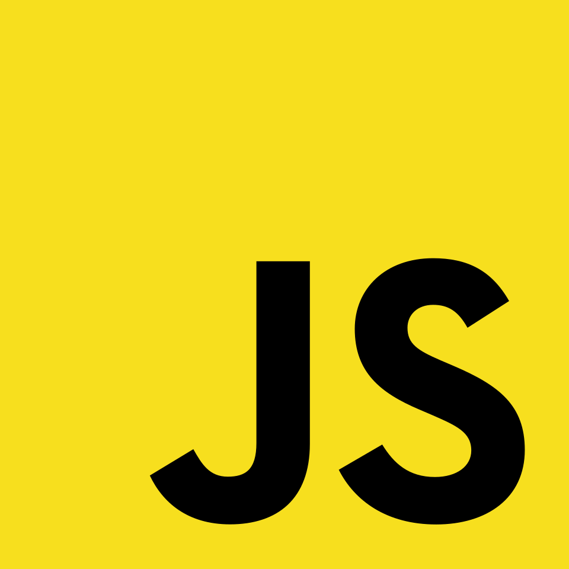
JavaScript

Vue
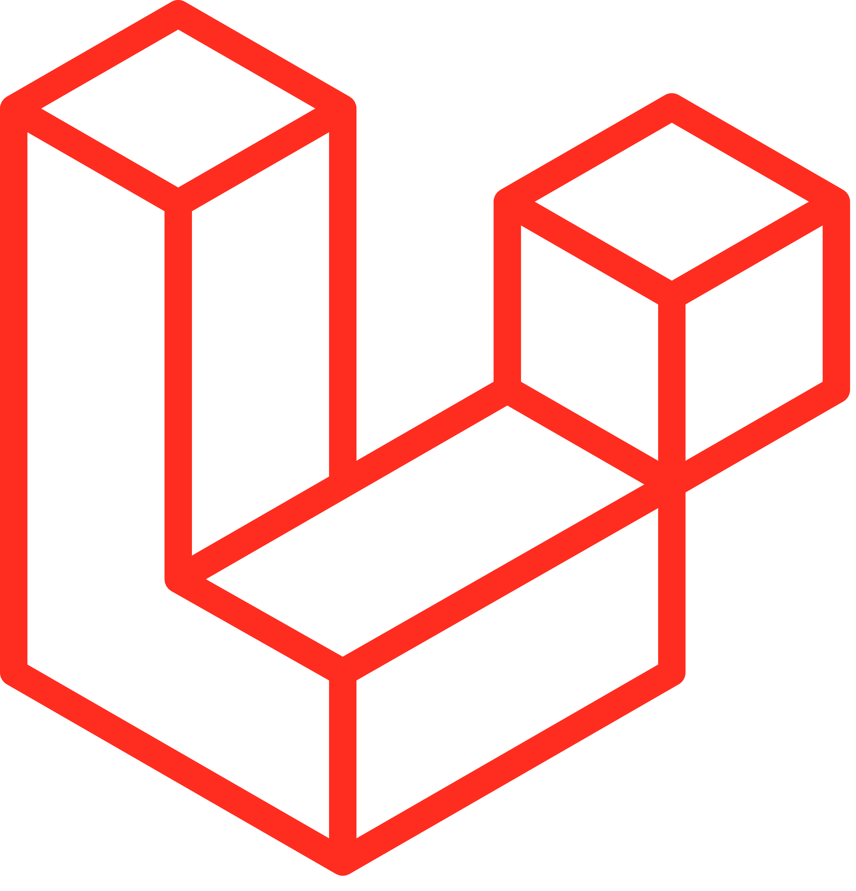
Laravel

MySql

Docker
Flask

Python
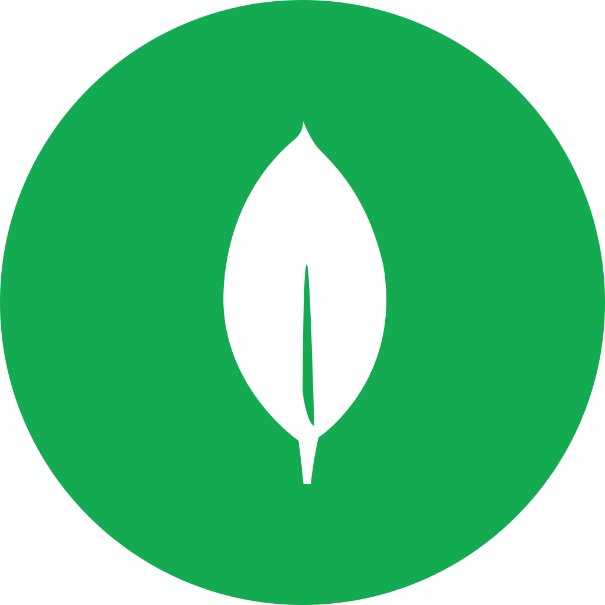
MongoDB
Unity
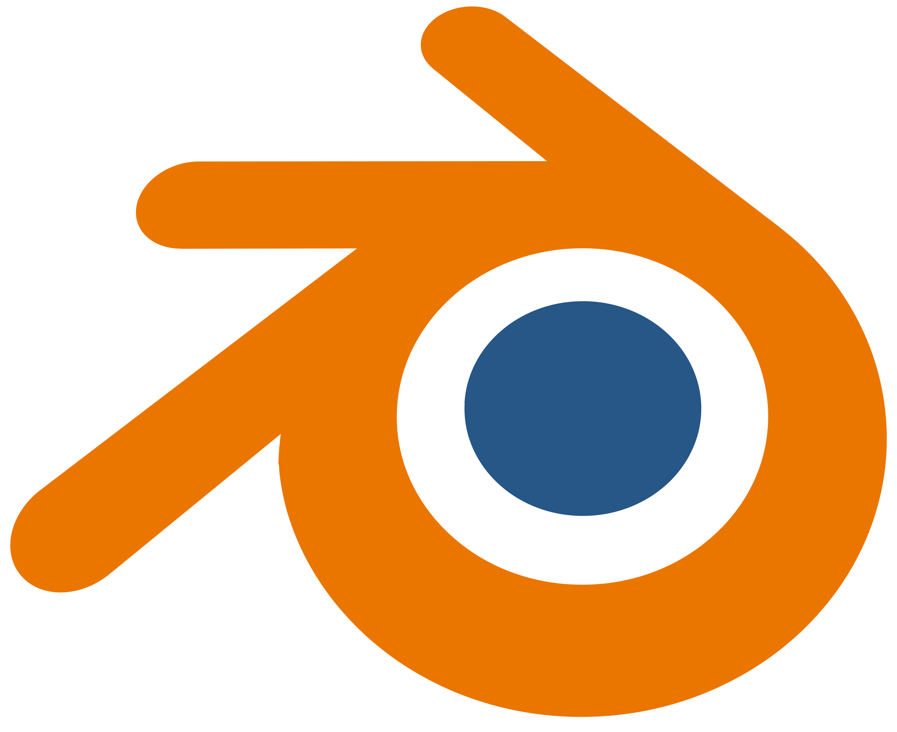
Blender

Maya
SubstancePainter
LibGDX

WordPress
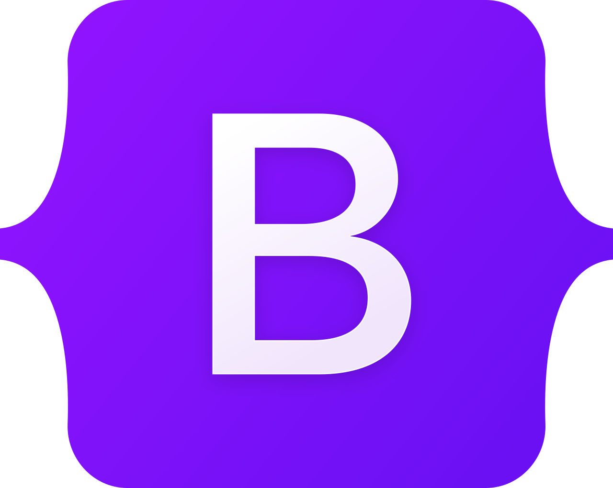
Bootstrap
Desarrollador Web y de Videojuegos
C#
PHP
Java
Html
Css

JavaScript
Vue

Laravel
MySql
Docker
Flask
Python

MongoDB

Unity

Blender
Maya
SubstancePainter
LibGDX
WordPress

Bootstrap
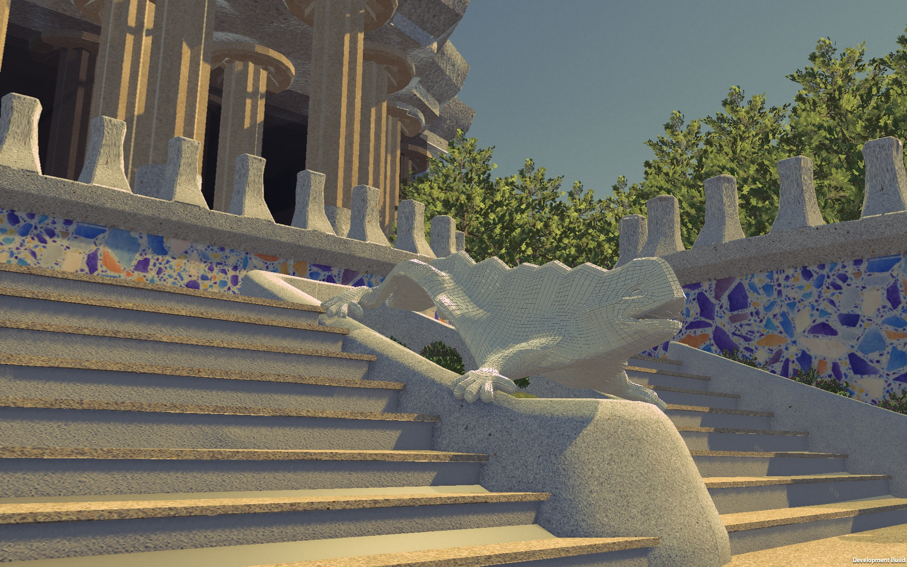
Game Jump RetroBarcelona 2026
Ganador del Premio a la Mejor Jugabilidad
Juego creado durante una Game Jam en el que tendrás que devolverle sus colores al famoso Dragón de Antoni Gaudí del Park Güell. ¡El pobre ha perdido toda su alegría y necesita tu ayuda! Sumérgete en una experiencia frenética y contrarreloj, donde tendrás que pintar y completar el dragón lo más rápido posible.
Link del sitioTemuCraft es un proyecto personal desarrollado para un servidor de Minecraft, con el objetivo de crear un negocio virtual ficticio dentro del juego.
En él se ofrece una amplia variedad de productos y servicios que los jugadores pueden adquirir utilizando la moneda virtual del servidor, creando así una experiencia de comercio y gestión de un negocio dentro del mundo de Minecraft.
Link del sitio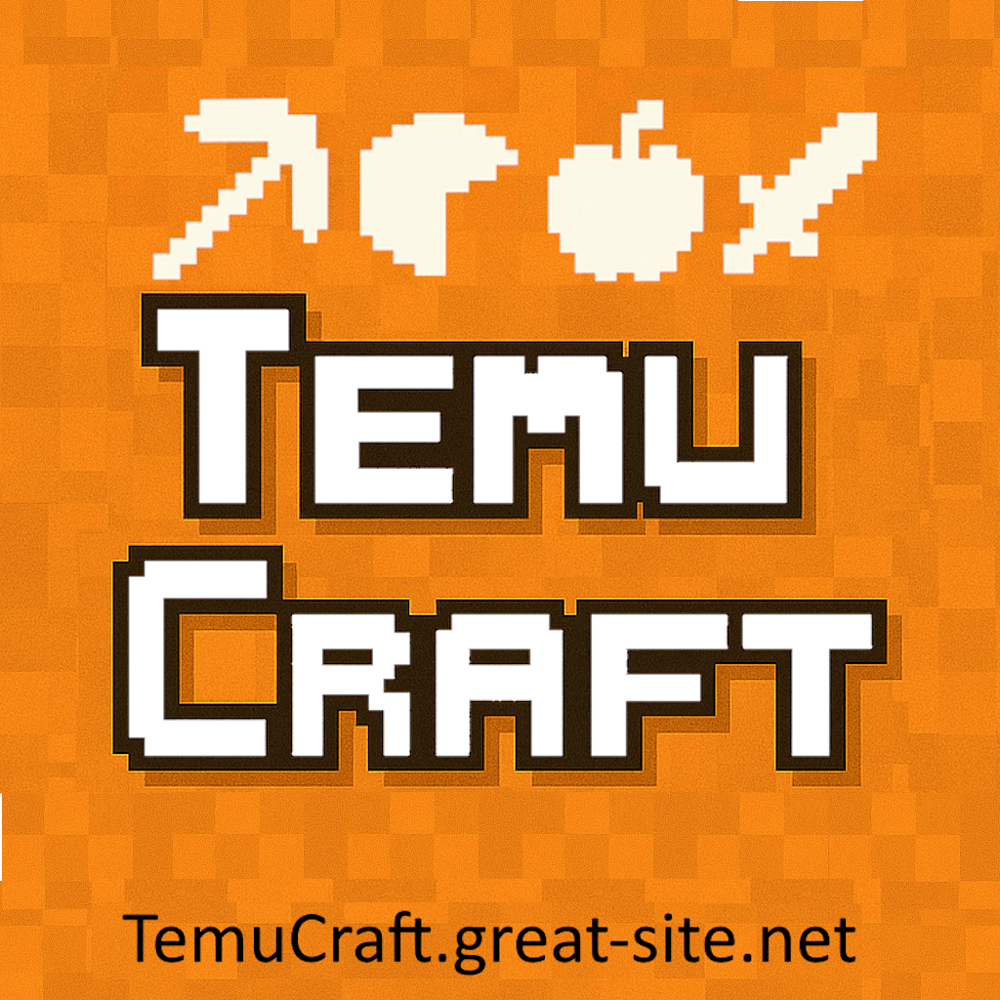
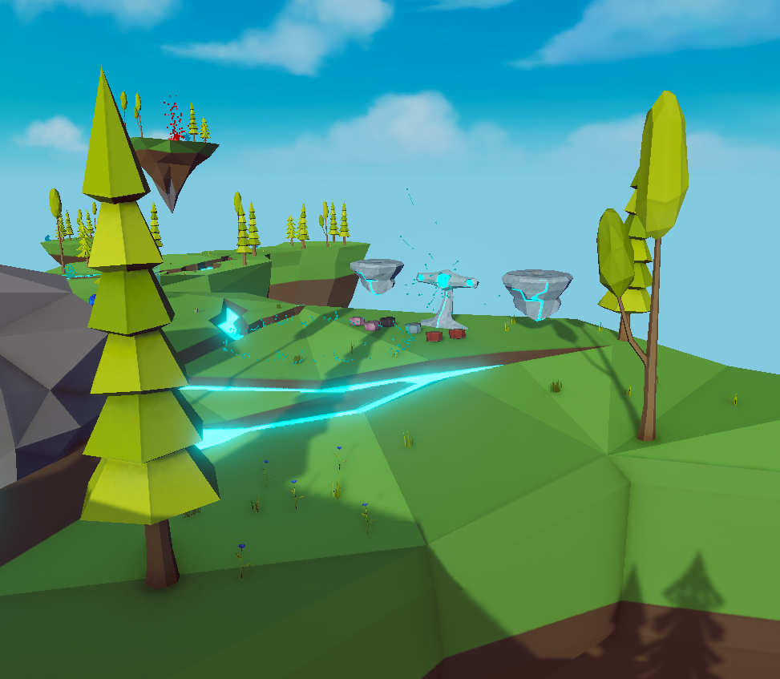
Meteorborn es un juego en el que te encuentras estrellado en un planeta desconocido; deberás resolver una serie de puzzles y conseguir reconstruir tu cohete con el que podrás escapar del planeta.
Link del sitioJiraiya es un videojuego 2D top-down de acción y aventura inspirado en antiguas leyendas japonesas. Explora aldeas, montañas y templos mientras resuelves puzzles, desbloqueas habilidades y luchas contra poderosos enemigos para detener al malvado Orochimaru, quien amenaza con sumir el mundo en el caos.
Link del sitio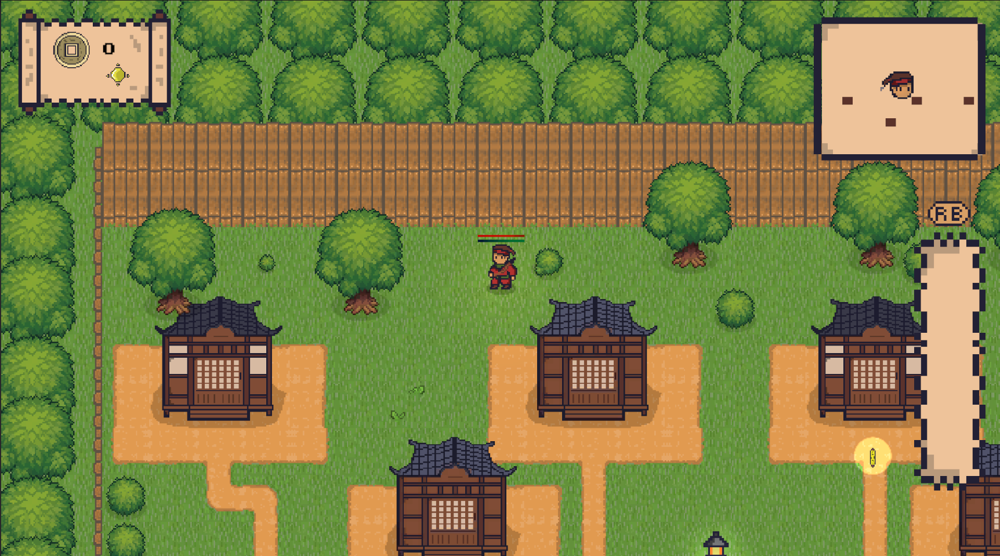
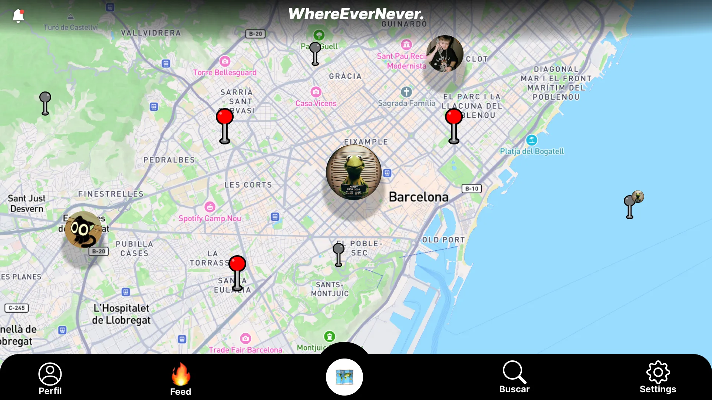
Una red social basada en ubicación donde los usuarios pueden crear publicaciones vinculadas a cualquier punto del mapa, combinando interacción social con geolocalización para ofrecer una forma única de descubrir contenido.
Link del sitioGmail: nil48fernandez@gmail.com
Telefono: +34 699 23 76 27
Github: https://github.com/nilbalaguer